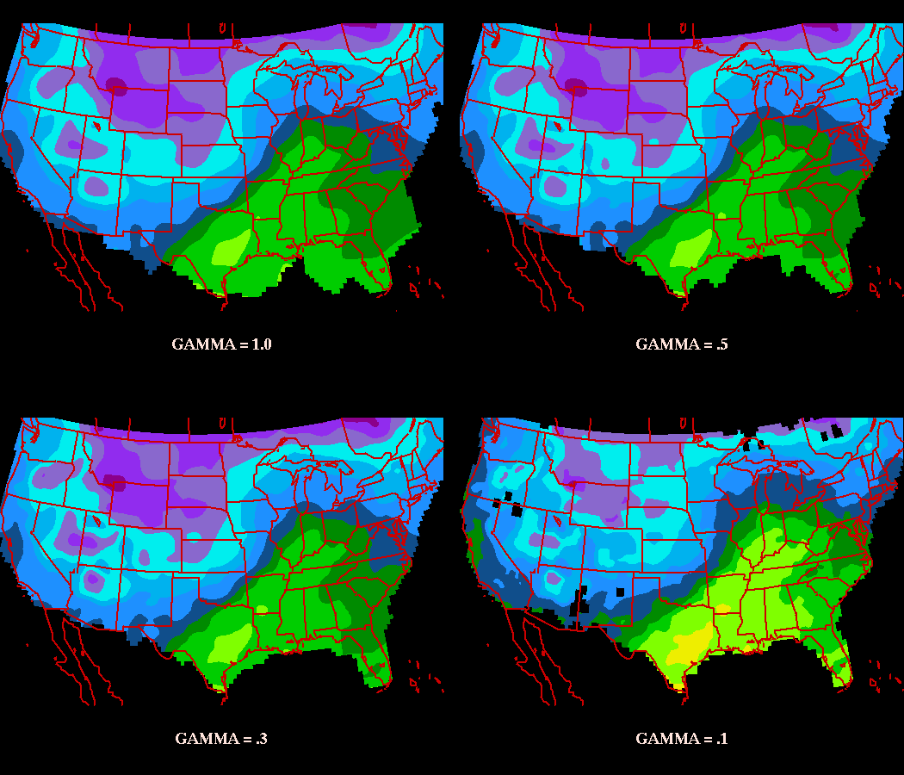
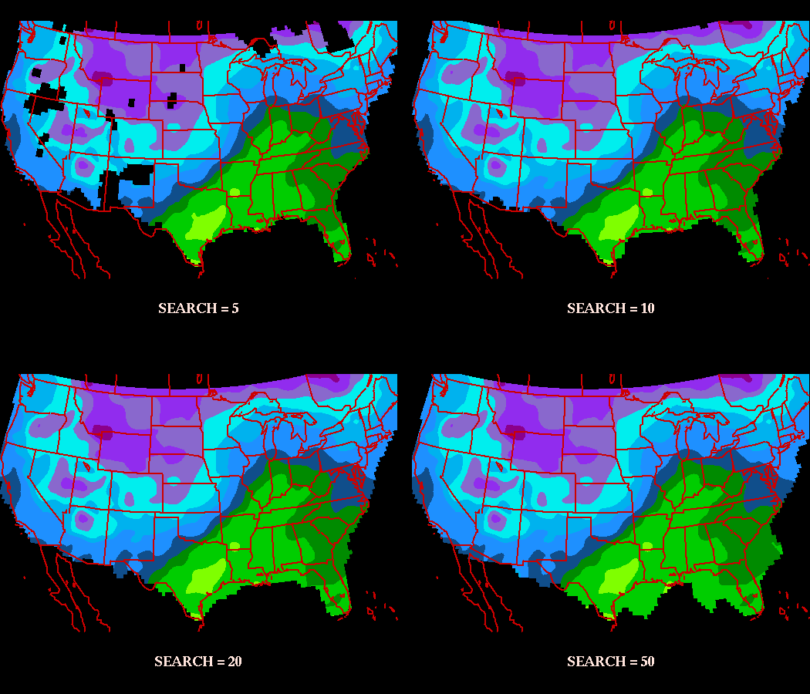
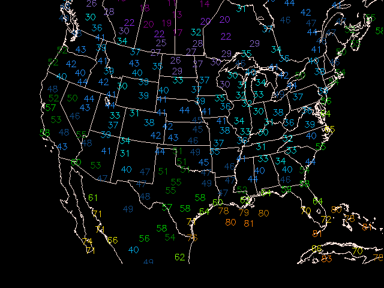

Objective analysis is the process of interpolating data from irregularly spaced locations to a fixed grid.
GEMPAK grid programs which plot contours and vectors use algorithms which require data on a rectangular grid. The process of contouring, as well as calculating finite differences, uses the gridpoints to perform the desired operation.
Numerical model simulations are perfomed using gridpoints, so that data is already on a regular grid. However, for standard surface and upperair measurements the data must first be gridded.
In addition to simply gridding unevenly-spaced data, objective analysis can filter data. The process of filtering occurs as stations surrounding a nearby grid point receive a relative weight, typically based on the distance they lie from the gridpoint. The process of assigning weights to grid points determines the eventual contribution that point will have in the final value of the gridpoint.
Stations which lie closest to the gridpoint receive the greatest weight, while those that lie farther away contribute less to the overall value. In this way, the gridpoint is not representative of a single station, but is instead a best fit to all the surrounding data.
As a result, the final grid value is a compromise between all the stations which are used to determine the value. The effect of considering several stations leads to smoothing of the data. The final grid point value will range somewhere between the maximum and minimum values of the stations used.
The Objective Analysis procedure used for GEMPAK is known as a Barnes scheme. For a detailed technical description, see Koch, desJardins,and Kocin: Journal of Climate Appl. Meteor., 22, 1487-1503.
The Barnes Scheme applies a Gaussian Weighting function, in which the weight a station contributes to the overall value of the grid point falls off rapidly with increasing distance from the point. Since the tails of a Gaussian function are infinite, in practice a radius of influence is chosen such that stations outside the circle about the gridpoint are not considered.
 The GEMPAK implementation requires that at least 3 stations be within the radius for a value to be assigned to a grid point.
The GEMPAK implementation requires that at least 3 stations be within the radius for a value to be assigned to a grid point.
The depiction above represents the Barnes Analysis process. For each gridpoint, stations within the radius of influence R are assigned a weight value W using the formula:

where d is the distance from the station to the gridpoint.
After the weights are determined, the first guess of the gridpoint is determined by:

This is known as the first pass of the scheme. If more than 1 iteration of the scheme is desired (typically 2 passes are preformed), a method known as successive correction is applied. This method interpolates from the new (first pass) grid values back to the original station. The difference in the interpolation from the original value is then used as a correction to the first pass grid point value.
A new parameter called the convergence parameter (Γ) is used to control the amount of smoothing. Each correction step can be represented as:

where (W') is the correction weight parameter:

The convergence parameter (Γ - or GAMMA in GEMPAK) ranges between 0 and 1. A value between .2 and .3 is generally assumed.
Since the grid point values are essentially weighted averages of surrounding stations, the grid point value will always be less than the maximum, and greater than the minimum values surrounding the point. As a result, there is smoothing occuring within the grid. The purpose of the convergence parameter on successive correction passes is to mitigate oversmoothing of the data.
Prior to running the objective analysis routines, a grid file must be created in which to store the output grids. Grid files can be created either with OAGRID or with GDCFIL.
GDCFIL is typically used when the user has some knowledge about the data that will be gridded, and is experienced in the selection of the Barnes Analysis parameteres. The program OAGRID is designed to query that data that will be gridded, and suggest reasonable values for the parameters used in Barnes Analysis, which if accepted will be used to create the grid file.
Grid files may also be created by using information in existing grid files and copying the navigation and analysis parameters to the newly generated grid file.
OAGRID creates a GEMPAK grid file which can be used in a Barnes
objective analysis program.
GDFILE Grid file DELTAN Station spacing DELTAX X spacing DELTAY Y spacing GRDAREA Area covered by grid EXTEND Points to extend grid DTAAREA Data area for OA SOURCE Data source (SN or SF) SNFILE Sounding data file SFFILE Surface data file SNPARM Sounding parameter list SFPARM Surface parameter list DATTIM Date/time LEVELS Vertical levels MAXGRD Maximum number of grids
The computed station spacing DELTAN is the average of the computed and uniform station spacing. This spacing will be used in the Barnes Analysis routines to determine the search radius also known as the radius of influence. A default value of 0 should be used for OAGRID to compute and select its own value.
The value of DELTAN is used with the selected grid region to compute DELTAX and DELTAX. If values are given for DELTAN, DELTAX, and DELTAY, OAGRID will accept those values for the grid.
The EXTEND area is the number of grid rows to extend the GRDAREA for the first pass of the Barnes analysis. The purpose of extending the desired grid area is to reduce the edge effects. DTAAREA is the region in which station data is considered.
OAGRID produces evenly spaced lat/lon (CED) grids. For greater flexibility in choosing the projection, GDCFIL may be used.
For more experienced users of objective analysis schemes, GDCFIL cay be used to create a new grid file or copy grid information from an existing file. GDCFIL allows the user the ability to choose the projection and number of grid points the file will contain.
New variables to make note of:
KXKY The number of X;Y grid pointsCPYFIL Used to copy grid file information from an existing grid file. Other variables are ignored if CPYFIL is not blank.ANLYSS Grid analysis block, in the form: DELTAN / EXTENDIf the DELTAN field in ANLYSS is left blank, the DELTAN values is assigned as twice the grid spacing computed from the gridarea and KXKY.
CPYFIL can be used to transfer the grid information from an existing file, or to generate a grid based on one of the known grids in the grid navigation table used for model grids.
OABSFC may be used to perform and objective analysis on surface data, once a grid file has been created using OAGRID and/or GDCFIL.
New variables for OABSFC:
DTAAREA Area of objective analysis if not same as grid fileGUESS First guess file, if availableGUESFUN First guess field, if availableQCNTL Quality control threshold for first guessGAMMA Value of the convergence parameterSEARCH Search radius for stationsNPASS Number of passes in the Barnes SchemeOABND Bounds file(s) to use for 'blocking' out regionsDTAAREA is typically the same area as the grid file, and may be left blank or set to DATA. Stations which posses bad data may be eliminated from consideration by appending a tag /-@station1;station2;etc. to this variable.
GUESS and GUESFUN can be used to supply the original guess field as a zeroeth pass of the Barnes analysis. GUESFUN may be different than the field to be analyzed. For example, the 10 meter temperature from a model at a specific forecast hour can be used as a first guess for the 2 meter temperature analyzed field. QCNTL can be used to create a threshold for rejecting data which deviate from the expected first guess field.
GAMMA is a value between 0 and 1. Typically a value between .2 and .3 is used.
SEARCH is a value between 1 and 50, such that stations receiving a weight less than EXP(-SEARCH) are considered negligible. Typically a value of 20 is used, which corresponds to a weight threshold of approximately 2e-9. A modifier of /EX may be used to allow data extrapolation for regions that lack at least 3 station within the search radius.
NPASS may be from 1 to 5 passes. 2 passes are recommended.
A word of warning! Although objective analysis does filter data so that any singular value does not contribute solely to a grid point value, it does not prevent the contribution of BAD data.
You should always inspect the raw data that is used in objective analysis to determine possible contamination of grid results. When using gridded data, the #1 rule is always, Garbage in, Garbage out.
OABSND may be used to perform and objective analysis on sounding data, once a grid file has been created using OAGRID and/or GDCFIL.
New variables for OABSFC:
SNPARM Level parameters indicies to be griddedSTNDEX Special entire sounding indices to be griddedVCOORD Vertical coordinate for levels usedLEVELS Levels on which to perform analysis
OABSNDusing several subsets instead of all desired combinations at one in order to avoid running your workstation out of memory!
Upper air stations are typically spaced at greater distances than surface data stations, so the grid spacings should be correspondingly greater for upperair data. Remember that data void regions can cause maximas and minimas to be displaced!
Perform objective analyses for surface temperature as a function of convergence parameter GAMMA. Plot a 4 panel graphic showing the comparison, using the following values:
GAMMA = 1.0 (maximum smoothing)GAMMA = 0.5GAMMA = 0.3 (default)GAMMA = 0.1(minimum smoothing)You will need to create your grid file barnes1.grd and make 3 additional copies.
Start with OAGRID:
GEMPAK-OAGRID>
GDFILE = barnes1.grd
DELTAN = 0
DELTAX = 0
DELTAY = 0
GRDAREA = us
EXTEND = 2;2;2;2
DTAAREA =
SOURCE = SF
SNFILE =
SFFILE = metar
SNPARM = ;TMPC;;HGHT;DWPC;BRBM
SFPARM = tmpf;dwpf;pmsl;sped;drct
DATTIM = 1200
LEVELS = 500
MAXGRD = 200
GEMPAK-OAGRID>r
We're using live data by specifying SFFILE = metar, as SOURCE is set to SF.
After runing, exit the program:
GEMPAK-OAGRID>e
and make three copies of your file barnes1.grd
cp barnes1.grd barnes2.grd
cp barnes1.grd barnes3.grd
cp barnes1.grd barnes4.grd
GEMPAK-OABSFC>
SFFILE = metar
GDFILE = barnes1.grd
SFPARM = tmpf;dwpf;pmsl;sped;drct
DATTIM = 1200
DTAAREA =
GUESS =
GAMMA = 1
SEARCH = 20
NPASS = 2
QCNTL =
OABND =
GDATTIM =
GFUNC =
GLEVEL = 0
GVCORD = none
GEMPAK-OABSFC>r
Next, change GDFILE and GAMMA to the next value:
GDFILE = barnes3.grd
GAMMA = 0.5
GEMPAK-OABSFC>r
Do the same for GAMMA = 0.3 and GAMMA = 0.1, saving to the other two barnes analysis grid files.
Plot the four new surface grids using GDCNTR, and using setting different panels for each using the PANEL variable.
> gdcntr
gdattim = last
glevel = 0
gvcord = none
gfunc = tmpf
gdfile = barnes1.grd
panel = ul
clear = y
garea = #35;-93;12;27
proj = lea/35;-100;0
fline = 30-7
ctype = f
fint = 5
title = 1/-1/GAMMA = 1.0
GEMPAK-GDCNTR>r
clear = n
panel = ur
gdfile = barnes2.grd
title = 1/-1/GAMMA = .5
GEMPAK-GDCNTR>r
panel = ll
gdfile = barnes3.grd
title = 1/-1/GAMMA = .3
GEMPAK-GDCNTR>r
panel = lr
gdfile = barnes4.grd
title = 1/-1/GAMMA = .1
GEMPAK-GDCNTR>r

Now perform objective analyses of surface temperature using search values of 5, 10, 20 and 50 (GAMMA = 0.3). Plot a 4 panel graphic to compare search radii.
Lets recycle our first grid file from the first run:
> gddelt
gdfile = barnes1.grd
gdnum = list
GEMPAK-GDDELT>r
Enter to delete grids or type EXIT:
GEMPAK-GDDELT>e
Now make 3 more copies of the file again:
cp barnes1.grd barnes2.grd
cp barnes1.grd barnes3.grd
cp barnes1.grd barnes4.grd
Now perform the Barnes Analyses:
> oabsfc
SFFILE = metar
GDFILE = barnes1.grd
SFPARM = tmpf
DATTIM = 1200
DTAAREA =
GUESS =
GAMMA = .3
SEARCH = 5
NPASS = 2
GEMPAK-OABSFC>r
GEMPAK-OABSFC>gdfile = barnes2.grd
GEMPAK-OABSFC>search = 10
GEMPAK-OABSFC>r
GEMPAK-OABSFC>gdfile = barnes3.grd
GEMPAK-OABSFC>search = 20
GEMPAK-OABSFC>r
GEMPAK-OABSFC>gdfile = barnes4.grd
GEMPAK-OABSFC>search = 50
GEMPAK-OABSFC>r
GEMPAK-OABSFC>e
Finally, lets plot it up:
> gdcntr < barnes_search.dat

Multi-panel displays are composed in a manner very similar to overlays. The first panel is drawn with CLEAR=YES, and subsequent panels are drawn with CLEAR=NO. The only difference is that the PANEL variable is changed to a different region of the window. Of course, you can create multi-panel displays with overlays too!
PANEL specifies the panel location, panel outline color, line type and width separated with slashes:
panel location / outline color / line type / width / region
The panel location determines the location of the view region on the graphics device. It may be specified using a number or abbreviation as follows:
NUMBER ABBREVIATION DESCRIPTION
0 ALL Entire device
1 UL Upper left quadrant
2 UR Upper right quadrant
3 LL Lower left quadrant
4 LR Lower right quadrant
5 L Left half
6 R Right half
7 T Top half
8 B Bottom half
An easy 9-panel capability uses abbreviations M1,...,M9 which will be laid out on the page as:
M1 M2 M3
M4 M5 M6
M7 M8 M9
The view region may also be specified as four numbers separated with semicolons, giving the lower left and upper right corners in fractions of the graphics display area. The origin is in the lower left of the display. For example, the lower left quadrant can be given as:
0;0;.5;.5
If the panel location is unspecified, the current location is unchanged.
The panel outline color, line type and line width specify the values used to draw a box around the specified region. The valid regions are VIEW, PLOT and DEVICE. If the color is 0 or unspecified, no box is drawn.
SFCFIL creates a new GEMPAK surface file.
SFOUTF = metar.sfc
SFPRMF = tmpc;dwpc;sped;drct;pmsl
STNFIL = sfstns.tbl
SHIPFL = no
TIMSTN = 15/100
SFFSRC = AIRW|TEXT
GEMPAK-SFCFIL>r
GDGSFC computes grid data and interpolates to stations in a GEMPAK surface file.
INPUT PARAMETERS
GDFILE Grid file GDATTIM Grid date/time GVCORD Grid vertical coordinate GLEVEL Grid level GFUNC Scalar grid SCALE Scalar scale / vector scale SFFILE Surface data file SFPARM Surface parameter list
The program computes the requested grid data from the given
grid file. GFUNC can be any valid GEMPAK grid function. The
other grid related parameters are used to specify the grid
to calculate.
The output surface file, SFFILE, must already exist. The
output parameter, SFPARM, must also exist in the surface file.
The program reads each successive station from the surface file
and overwrites the existing data with the interpolated data from
the grid.
With GDGSFC:
GDFILE = gfs
GDATTIM = 0000f012
GVCORD = none
GLEVEL = 0
GFUNC = tmpc
SCALE =
SFFILE = metar.sfc
SFPARM = tmpc
GEMPAK-GDGSFC>r
With SFMAP:
AREA = us-
GAREA = us
SATFIL =
RADFIL =
IMCBAR =
SFPARM = tmpf
DATTIM = 1200
SFFILE = metar.sfc
COLORS = (20-95-5/30-14//U)
MAP = 1
MSCALE = 0
LATLON = 0
TITLE = @ GFS Forecast Temperatures (F)
CLEAR = y
PANEL = 0
DEVICE = xw
PROJ =
FILTER = YES
TEXT = 1/2//hw
LUTFIL =
STNPLT =
CLRBAR =
LSTPRM =
GEMPAK-SFMAP>r
